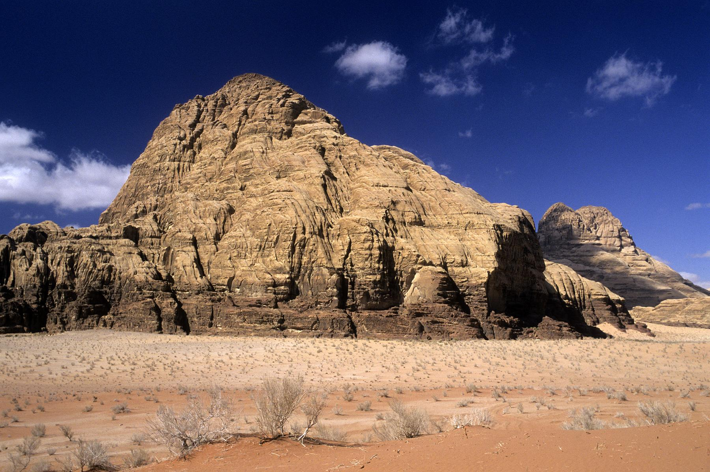
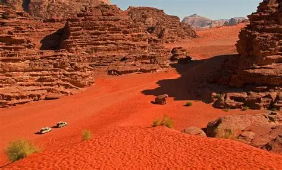
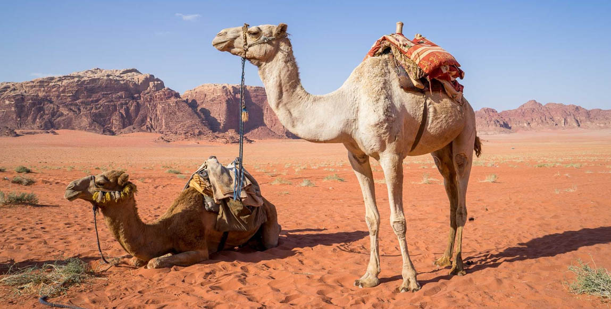

🏜️ Lieux à explorer

Les Montagnes de Grès – Formations incroyables à explorer

Les Dunes Rouges – Une mer de sable rouge fascinante

La Vallée de Lawrence – Les traces d’un désert légendaire

Balades à dos de chameau – Expérience authentique du désert